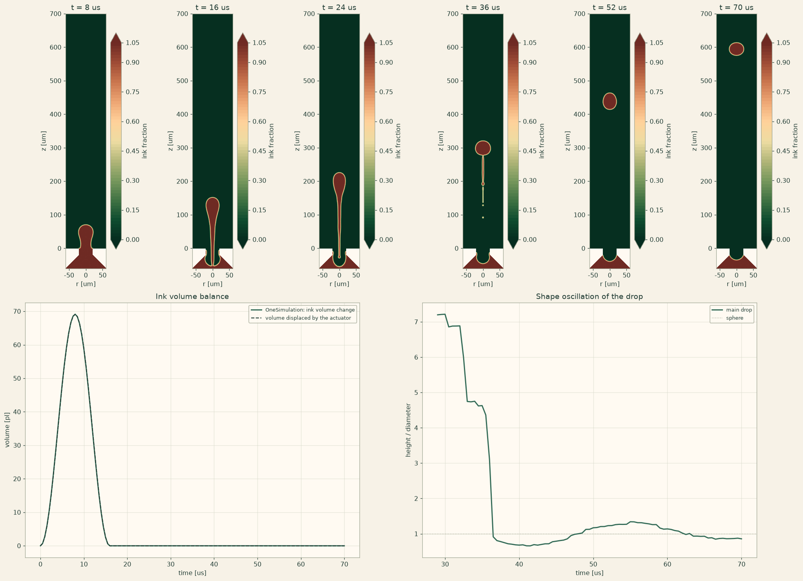
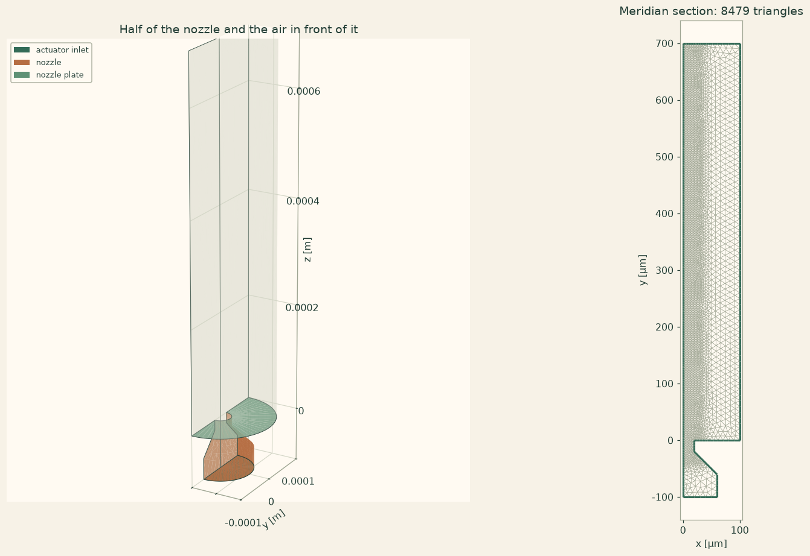

Docs › Examples › Droplet ejection from an inkjet nozzle
Two-phase flow · 2D-axisymmetric
Droplet ejection from an inkjet nozzle
A piezo pulse pushes ink through a 20 um orifice and pulls it back: the jet thins, pinches off and flies on as one drop that oscillates in shape.
Run locally with OneSimulation. The example downloads are free. Running them requires an activated runtime. Runtime Alpha 0.2.1a8 · CPython 3.13 on macOS (Apple Silicon), Ubuntu 22.04 (x86-64), and Windows x64. Installation and activation · View pilot plans. Scope of the reference checks.


What it computes
OneSimulation cuts the nozzle and the air in front of it from a STEP part and solves the axisymmetric two-phase Navier-Stokes equations with Taylor-Hood elements on revolved spaces; a level set with geometric redistancing carries the ink-air interface through break-off, with the density jump of 1:830 and semi-implicit surface tension. The script that builds the STEP file comes with the notebook.
What it checks
The ink volume follows the volume displaced by the actuator within 0.49 %; the drop (radius 20.3 um, 8.5 m/s) breaks off after 29 us with Z = 1/Oh = 12.5 inside the printable window 4-14, and its shape oscillates with a period of 24.5 us against 24.6 us from Lamb's viscous free-drop mode (-0.2 %).
Geometry
The notebook starts at the import of the CAD file inkjet_nozzle_droplet_ejection.step: STEP (AP242), readable by any CAD program, with the names of the faces that the boundary conditions use. Put it next to the notebook.


The geometry script
The script inkjet_nozzle_droplet_ejection_geometry.py builds the geometry with the CAD objects of OneSimulation and writes the file. Change a dimension there, run it, and run the notebook again.
"""Geometry of the OneSimulation example "Droplet ejection from an inkjet nozzle".
Builds the fluid space of a piezo inkjet nozzle as half a solid of revolution about the z axis with
the CAD objects of OneSimulation, drawn in micrometres: the ink chamber (radius 60 um), the conical
nozzle narrowing to the orifice of radius 20 um at z = 0, and the air above the nozzle plate
(radius 100 um, 700 um high) into which the drop is fired. Writes
inkjet_nozzle_droplet_ejection.step with the face groups inlet (bottom of the chamber, where the
actuator pushes the ink), nozzle (chamber, cone and orifice walls), plate (outer face of the nozzle
plate), open (side and top of the air space) and axis (the cut through the axis).
"""
import numpy as np
from onesim.cad.d2 import Path, Profile, Segment
from onesim.cad.d3 import Revolution
outline = Path((0.0, -100.0), (Segment((60.0, -100.0), name="inlet"), Segment((60.0, -60.0), name="nozzle"),
Segment((20.0, -20.0), name="nozzle"), Segment((20.0, 0.0), name="nozzle"),
Segment((100.0, 0.0), name="plate"), Segment((100.0, 700.0), name="open"),
Segment((0.0, 700.0), name="open"), Segment((0.0, -100.0), name="axis")))
nozzle = Revolution(profile=Profile(outline), angle=np.pi).rotated((0, 0, 1), -np.pi / 2)
nozzle = nozzle.grouped(axis=nozzle.boundaries.start | nozzle.boundaries.end)
nozzle.save("inkjet_nozzle_droplet_ejection.step")The notebook
The complete notebook, cell by cell. Run it to produce the figures and the comparison printout.
A drop-on-demand print head fires one drop per actuator pulse. The ink chamber (radius \(R_c=60\) µm) narrows in a cone to the orifice of radius \(R_o=20\) µm at the nozzle plate \(z=0\); above the plate is air. The actuator moves the ink at the bottom of the chamber with the mean velocity
first pushing, then pulling: the push drives a jet out of the orifice, the pull cuts its root. Ink (index 2) and air (index 1) are two immiscible incompressible fluids,
with \(\rho\) and \(\mu\) jumping across the interface \(\Gamma\), which a level set \(\phi\) (signed distance, negative in the ink) carries with the flow. Aqueous ink: \(\rho_2=1000\) kg/m³, \(\mu_2=3\) mPa s, \(\sigma=0.07\) N/m; air: \(\rho_1=1.2\) kg/m³, \(\mu_1=0.018\) mPa s.
| face | condition |
|---|---|
inlet (bottom of the chamber) | \(u_z=2\bar U(t)\,(1-r^2/R_c^2)\), ink enters |
nozzle, plate | no slip |
open (side and top of the air space) | ambient pressure \(p=0\) |
axis | symmetry axis |
Reference. Incompressibility fixes the ink volume: \(V(t)-V(0)=\pi R_c^2\int_0^t\bar U\,dt'\). Whether a single drop forms is governed by the Ohnesorge number \(Oh=\mu_2/\sqrt{\rho_2\sigma R_o}\); printable inks lie in \(4\le Z=1/Oh\le14\) (D. Jang, D. Kim, J. Moon, Langmuir 25, 2629-2635, 2009). A free drop of radius \(a\) oscillates in its lowest shape mode with \(\omega^2=8\sigma/(\rho_2a^3)\), damped at the rate \(\gamma=5\nu_2/a^2\) (H. Lamb, Hydrodynamics, 6th ed., arts. 275 and 355).
import numpy as np
from onesim.cad.exchange import load
from onesim.materials import NewtonianFluid
from onesim.meshing import TriangularMesher, scaled
from onesim.numerics import Numerics
from onesim.numerics.fem import FiniteElement, RevolvedH1SpaceFactory, TaylorHood
from onesim.numerics.linear import SparseDirect
from onesim.numerics.time import BDF
from onesim.physics.hydrodynamics import (AxisymmetricFlow, FixedVelocity, LevelSet, NoSlipWall, PhaseInlet,
PressureTraction, SymmetryAxis, TwoPhaseFlow)
from onesim.results import ResultRetentionPolicy, drop_statistics, phase_statistics
from onesim.simulation import ExecutionOptions, Problem, Simulation
from onesim.simulation.initial_conditions import InitialValue
from onesim.visualization import plots, theme
theme.set()Geometry and mesh
The STEP file holds half of the nozzle as a solid of revolution, drawn in micrometres; section((0, 1, 0)) cuts it in the plane through the axis (\(x\to r\), \(y\to z\)). The triangles are 2.5 µm along the path of the jet (\(r<35\) µm) and 10 µm elsewhere; scaled turns the mesh into metres.
part = load("inkjet_nozzle_droplet_ejection.step")
section = part.section((0, 1, 0))
faces = section.boundaries
mesh = scaled(TriangularMesher(target_size=10.0, size_field=lambda p: np.where((p[:, 0] < 35) & (p[:, 1] > -40), 2.5, 10.0),
grading=0.2).generate(section), "um")
fig = plots.figure(1, 2, size=(12, 7))
plots.geometry(part, selection={"actuator inlet": part.boundaries.inlet, "nozzle": part.boundaries.nozzle,
"nozzle plate": part.boundaries.plate}, labels=False, drawing_unit="um",
camera=plots.Camera(elevation=20, azimuth=-60), title="Half of the nozzle and the air in front of it", ax=fig[0])
plots.mesh(mesh, groups=("all",), legend=False, length_unit="um", title=f"Meridian section: {mesh.cell_count} triangles", ax=fig[1])
plots.show()Model
TwoPhaseFlow takes the two fluids, the surface tension and the interface method; LevelSet() keeps the signed distance by geometric redistancing and corrects the ink volume to the balance of what entered. The meniscus starts flat, 2 µm inside the orifice: \(\phi=z+2\) µm. Taylor-Hood elements on revolved spaces make the model axisymmetric; BDF2 steps of 50 ns run 70 µs.
air, ink = NewtonianFluid(density=1.2, dynamic_viscosity=1.8e-5), NewtonianFluid(density=1000.0, dynamic_viscosity=3e-3)
sigma, chamber, orifice, peak, period = 0.07, 60e-6, 20e-6, 1.2, 16e-6
pulse = lambda t: peak * np.sin(2 * np.pi * t / period) * (t < period)
flow = TwoPhaseFlow(domain=section.surface, fluids=(air, ink), interface=LevelSet(), surface_tension=sigma,
kinematics=AxisymmetricFlow())
problem = Problem(name="Inkjet nozzle", geometry=section, physics=(flow,), boundary_conditions=(
FixedVelocity(physics=flow, boundary=faces.inlet,
value=lambda x, y, t: np.column_stack((0 * x, 2 * pulse(t) * (1 - (x / chamber) ** 2)))),
PhaseInlet(physics=flow, boundary=faces.inlet, fluid=2),
NoSlipWall(physics=flow, boundary=faces.nozzle | faces.plate),
SymmetryAxis(physics=flow, boundary=faces.axis),
PressureTraction(physics=flow, boundary=faces.open, value=0.0)),
initial_conditions=(InitialValue(flow.phase, lambda x, y: y + 2e-6),))
result = Simulation(problem=problem, mesh=mesh, numerics=Numerics(
spatial=FiniteElement(element=TaylorHood(), provider=RevolvedH1SpaceFactory()), time_integrator=BDF(order=2),
linear_solver=SparseDirect())).run(start_time=0.0, end_time=70e-6, time_step=50e-9,
execution_options=ExecutionOptions(result_retention=ResultRetentionPolicy(mode="stride", stride=10)))Ink volume, drop and printability
phase_statistics gives volume, centroid and mean velocity of the ink at every saved time; drop_statistics splits the ink into its connected pieces. A piece whose lowest point lies above the orifice plane has left the nozzle; the largest of them is the main drop, the others are satellites.
rho_ink, mu_ink = 1000.0, 3e-3
ink_all = phase_statistics(result, flow)
times = ink_all.times
displaced = np.pi * chamber**2 * np.array([np.trapezoid(pulse(np.linspace(0, t, 401)), np.linspace(0, t, 401)) for t in times])
balance = np.max(np.abs(ink_all.volume - ink_all.volume[0] - displaced)) / np.max(displaced)
pieces = drop_statistics(result, flow)
flying = [[d for d in found if d.extent[0, 1] > 2e-6] for found in pieces]
main = [max(found, key=lambda d: d.volume) if found else None for found in flying]
index = [i for i, drop in enumerate(main) if drop is not None]
first = index[0]
radius = (3 * main[-1].volume / (4 * np.pi)) ** (1 / 3)
speed = (main[-1].centroid[1] - main[index[-5]].centroid[1]) / (times[-1] - times[index[-5]])
ohnesorge = mu_ink / np.sqrt(rho_ink * sigma * orifice)
print(f"ink volume against displaced volume: largest deviation {100 * balance:.2f} % of the pushed volume")
print(f"break-off after {1e6 * times[first]:.1f} us; at 70 us {len(flying[-1])} drop(s) in flight")
print(f"main drop: radius {1e6 * radius:.1f} um ({main[-1].volume / np.max(displaced):.2f} of the pushed volume), speed {speed:.2f} m/s")
print(f"Ohnesorge number Oh = {ohnesorge:.3f}, Z = 1/Oh = {1 / ohnesorge:.1f} (printable window 4 <= Z <= 14)")
print(f"Weber number of the drop: {rho_ink * speed**2 * radius / sigma:.1f}")The main drop leaves the nozzle stretched and oscillates between a prolate and an oblate shape. Its aspect ratio (height over diameter) is compared with the lowest capillary mode of a free drop of the same volume: half-periods from the zero crossings of the aspect ratio about its mean.
aspect = np.array([main[i].size[1] / (2 * main[i].size[0]) for i in index])
flight = times[index]
crossings = flight[1:][np.diff(np.sign(aspect - aspect[len(aspect) // 2:].mean())) != 0]
omega = np.sqrt(8 * sigma / (rho_ink * radius**3))
damping = 5 * mu_ink / rho_ink / radius**2
lamb = 2 * np.pi / np.sqrt(omega**2 - damping**2)
measured = 2 * np.mean(np.diff(crossings)) if len(crossings) > 2 else float("nan")
print(f"shape oscillation period: {1e6 * measured:.1f} us measured, {1e6 * lamb:.1f} us Lamb (free drop, viscous), "
f"deviation {100 * (measured / lamb - 1):+.1f} %")Figure
Ink (red) and air at six times, mirrored at the axis to the full nozzle; below, the ink volume against the volume the actuator displaced, and the aspect ratio of the flying drop.
shots = (8e-6, 16e-6, 24e-6, 36e-6, 52e-6, 70e-6)
mirror = {"planes": [((1, 0), (0, 0))]}
fig = plots.figure(layout=[[f"t{i}" for i in range(6)], ["volume"] * 3 + ["aspect"] * 3], size=(18, 13))
for i, t in enumerate(shots):
plots.surface(result.field(flow.volume_fraction), time=times[np.argmin(np.abs(times - t))], limits=(0.0, 1.0), subdivisions=2, symmetry=mirror, length_unit="um",
xlimits=(-60e-6, 60e-6), ylimits=(-60e-6, 700e-6), label="ink fraction", xlabel="r [um]", ylabel="z [um]",
title=f"t = {1e6 * t:.0f} us", ax=fig[f"t{i}"])
plots.line(y={"OneSimulation: ink volume change": (1e6 * times, 1e15 * (ink_all.volume - ink_all.volume[0]))},
reference={"volume displaced by the actuator": (1e6 * times, 1e15 * displaced)}, xlabel="time [us]",
ylabel="volume [pl]", title="Ink volume balance", legend="upper right", ax=fig["volume"])
plots.line(y={"main drop": (1e6 * flight, aspect)}, hlines={"sphere": 1.0}, xlabel="time [us]", ylabel="height / diameter",
title="Shape oscillation of the drop", legend="upper right", ax=fig["aspect"])
plots.show()Going further
Change the pulse (peak, period, a push without pull) and watch satellites appear or vanish; a more viscous ink (mu_ink, \(Z<4\)) stays attached, a thinner one (\(Z>14\)) breaks into many drops. interface=PhaseField(interface_width=..., mobility=...) or ConservativeLevelSet() switches the interface method; a WettedWall on the nozzle plate lets the meniscus wet it at a contact angle.